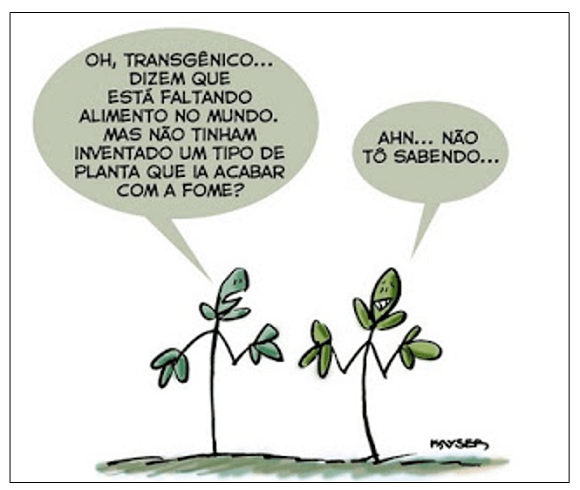
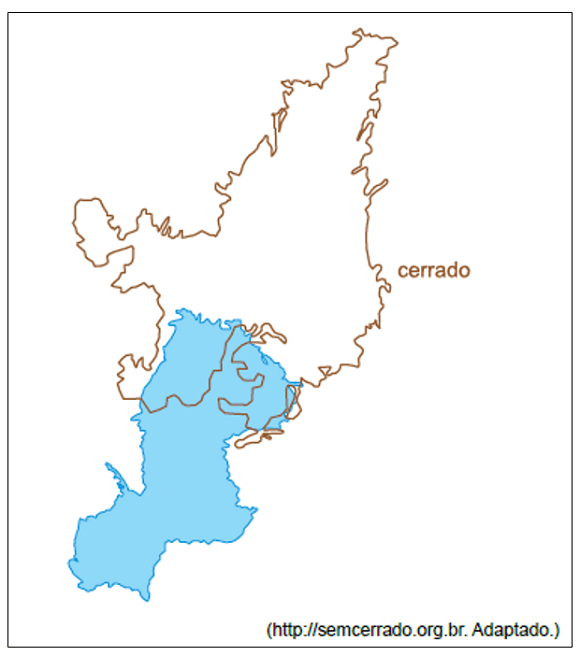
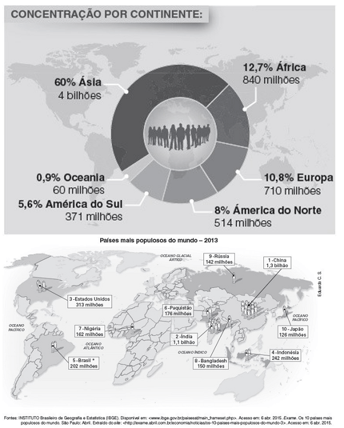
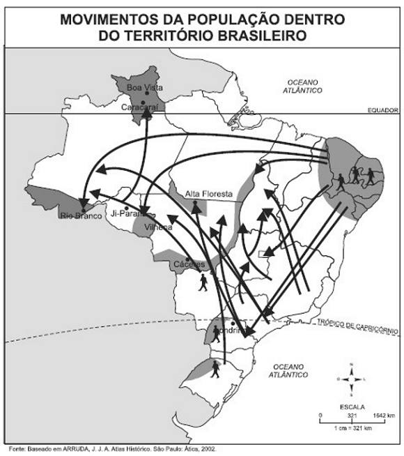

Conteúdo:
Questão 01
(ENEM 2012)

Charge Transgênico. ENEM 2012. Disponível em: http://nutriteengv.blogspot.com.br. Acesso em: 28 dez. 2011.
Na charge faz-se referência a uma modificação produtiva ocorrida na agricultura. Uma contradição presente no espaço rural brasileiro derivada dessa modificação produtiva está presente em:
a) Expansão das terras agricultáveis, com manutenção de desigualdades sociais.
b) Modernização técnica do território, com redução do nível de emprego formal.
c) Valorização de atividades de subsistência, com redução da produtividade da terra.
d) Desenvolvimento de núcleos policultores, com ampliação da concentração fundiária.
e) Melhora da qualidade dos produtos, com retração na exportação de produtos primários.
Comentário:
O Brasil apresenta uma grande contradição no seu espaço agrário. Enquanto ano após ano as safras batem recordes de produção, ainda há uma grande parcela da população com subnutrição. Os avanços na biotecnologia ajudaram na expansão das terras agricultáveis, mas não apagaram os problemas de desigualdade social no campo.
Questão 02
(UNESP 2018) O cerrado brasileiro é conhecido como o “berço das águas” da América do Sul, pois abastece as grandes bacias hidrográficas e reservatórios de água doce do continente.

Considerando o conhecimento sobre as águas subterrâneas, a área destacada na figura corresponde ao Sistema Aquífero
a) Urucuia, associado às rochas sedimentares do Escudo das Guianas.
b) Guarani, constituído por rochas metamorfizadas do Escudo Atlântico.
c) Guarani, formado por rochas permeáveis da Bacia Sedimentar do Paraná.
d) Urucuia, formado por rochas basálticas do Cráton do São Francisco.
e) Cabeças, constituído por rochas ígneas da Bacia Sedimentar do Parnaíba.
Questão 03
(FDV 2017)
“Antes mesmo do acidente nuclear de Fukushima, no Japão, resultante de um terremoto, seguido de um tsunami, o debate sobre a questão energética já se encontrava em curso no Brasil, tendo como focos a construção da usina hidrelétrica de Belo Monte e da usina nuclear Angra 3. Os argumentos principais contra tais construções se relacionavam, e ainda se relacionam, no caso de Belo Monte, aos danos ambientais e sociais que tal construção causará e, no caso de Angra 3, aos perigos do uso da energia nuclear”.
(Disponível em: http://www.teoriaedebate.org.br. Acessado em 15/04/2017).
O debate sobre a produção energética, tanto no mundo quanto no Brasil, engloba vários fatores. Sobre o tema é correto afirmar:
a) Embora a energia nuclear apresente o risco de acidente, como ocorreu no Japão, este tipo de produção energética é seguro, pois não produz resíduos impactantes.
b) Além dos danos ambientais há um dano poucas vezes tratado, o financeiro, já que a produção energética não é rentável economicamente.
c) A questão energética tanto no Brasil, como no mundo, deve buscar equilibrar a demanda por mais energia com o menor dano ambiental.
d) Tanto no Brasil como no mundo, a produção energética renovável está tomando cada ano mais espaço, hoje, a nível mundial, já representa 52% da produção de energia elétrica.
e) A construção de Belo Monte provocou um debate equivocado sobre as hidroelétricas, já que o avanço tecnológico que a construção atingiu suplantou as dificuldades ambientais e não houve, neste caso, impacto ambiental.
Questão 04
(UNIPAR 2017) Com relação à geração de energia no Brasil, analise as proposições abaixo:
I. A construção de grandes usinas hidrelétricas ocorreu a partir da Segunda Guerra Mundial em função da aceleração da industrialização e contou com altos investimentos por parte do Estado.
II. A Usina de Itaipu começou a ser construída em meados da década de 1970, como parte do esforço do governo Geisel em aumentar a produção de energia sem levar em conta o impacto ambiental provocado por essa gigantesca obra.
III. A construção de usinas nucleares em Angra dos Reis evitou o colapso do abastecimento de energia nos grandes centros urbanos do país e trouxe uma alternativa à nossa dependência na geração de energia baseada essencialmente nas hidrelétricas.
Assinale a alternativa correta.
a) Somente as afirmativas I e II são corretas.
b) Somente as afirmativas I e III são corretas.
c) Somente as afirmativas II e III são corretas.
d) As afirmativas I, II e III são corretas.
e) Somente a afirmativa III é correta.
Questão 05
(FTD 2016)

O cruzamento de diferentes fontes de informação, como as do gráfico e do mapa apresentados, permite a visualização de aparentes contradições, como é o caso
a) do Brasil, que possui a quinta maior população mundial, mas está situado numa porção do continente com baixo percentual populacional mundial.
b) dos Estados Unidos, que possuem um grande contingente, porém que representa um valor inferior a 50% da população da América do Norte.
c) da Ásia, que possui 60% da população mundial, por conta do imenso território, mas seus países, individualmente, possuem baixa população.
d) da Europa, que apresenta o maior percentual populacional mundial, apesar de ser o continente com menor território.
e) da Oceania, que abriga a Indonésia, com mais de 232 milhões de habitantes, mas que não representa nem 1% da população mundial.
O mapa evidencia a elevada população brasileira, quinta maior do mundo, o que contribui significativamente para o percentual populacional da América do Sul, mesmo sendo esse percentual baixo quando comparado com o da maioria dos continentes.
Questão 06
(UNESP 2022) O Instituto Brasileiro de Geografia e Estatística (IBGE) realiza periodicamente censos para analisar a distribuição da população brasileira segundo a cor da pele. Nesse contexto, as informações obtidas pelos censos permitem a
a) apresentação de planos de contingência à entrada de imigrantes, grupos constituídos por indivíduos com potencial de descaracterizar o perfil demográfico nacional.
b) construção de políticas afirmativas articuladas à hegemonia populacional, assegurando o combate aos preconceitos no Brasil.
c) reestruturação da territorialidade das comunidades tradicionais, deslocando populações segundo sua participação no todo nacional.
d) elaboração de políticas públicas que busquem reduzir desigualdades sociais, especialmente aos grupos minoritários.
e) reavaliação da definição dos grupos formadores da população brasileira, minimizando a participação de populações pouco expressivas.
Em função do processo histórico nacional, determinados grupos segundo a cor da pele viram-se marginalizados no desenvolvimento da sociedade, seja do ponto de vista econômico, educacional, social etc. A pesquisa do IBGE vai permitir que a sociedade brasileira, por intermédio de seus representantes, possa estabelecer mecanismos de correção, recuperando assim direitos de grupos minoritários.
Questão 07
(UNIFESP 2009) No Brasil, a presença feminina em postos de trabalho cresceu, mas ainda não é elevada em cargos de chefia, quando comparada a dos homens.
Isso se deve à:
a) baixa taxa de desemprego.
b) dupla jornada de trabalho e barreiras culturais.
c) elevada taxa de fertilidade do país.
d) escolaridade superior entre as mulheres, maior que entre os homens.
e) contratação da mulher em atividades domésticas.
Questão 08
(UEG 2020) Leia a letra de música a seguir.i
“Chegou o fim de semana, todos querem diversão só alegria, nós estamos no verão [...]. Milhares de casas amontoadas, Ruas de terra Esse é o morro [...]. Aqui não vejo nenhum clube poliesportivo Pra molecada frequentar, Nenhum incentivo O investimento no lazer é muito escasso O centro comunitário é um fracasso” [...].
BROWN, Mano. Fim de semana no parque. Intérprete: Racionais MC´s. CD RaioS do Brasil. Zimbabwe, 1993.
A letra da música faz referência a diversos problemas relacionados à vida nas periferias, especialmente das grandes cidades.
Quanto a esses problemas, verifica-se que:
a) podem ser correlacionados à falta de regularização do solo urbano em áreas mais distantes do centro da cidade em decorrência das limitações impostas pelos planos diretores municipais.
b) têm suas origens relacionadas às desigualdades sociais, que levam as populações de baixa renda a ocupar áreas inadequadas, tais como encostas de morros e áreas de mananciais.
c) são originários da inadequação de políticas habitacionais que promovem a regularização fundiária e reassentamento de populações em áreas de risco.
d) relacionam-se à falta de legislação e de estudos que indiquem as áreas passíveis de ocupação e os espaços que deverão ser preservados nas cidades.
e) podem ser caracterizados como reflexos da elevada taxa de fertilidade das mulheres brasileiras, especialmente em áreas urbanas.
Questão 09
(UEFS BA 2015) Sobre as migrações internas no espaço brasileiro, é correto afirmar:

a) A superfície do território e a evolução histórica dos ciclos econômicos estão entre os estimuladores das migrações internas no país.
b) A década de 40 do século passado foi marcada pela expansão do êxodo rural e pela forte industrialização, fatores que resultaram em uma intensa urbanização.
c) O Sul é uma tradicional região excludente, pois os minifúndios dominantes em todo seu espaço não bastam às necessidades econômicas familiares.
d) Os estados de maior movimento emigratório são Goiás e Pernambuco e, com maior imigração, sobressaem-se os estados de Minas Gerais e Espírito Santo.
e) As secas do Sertão nordestino constituem o único fator repulsivo responsável pelas migrações internas ocorridas na Região Nordeste.
Questão 10
(UNIOESTE-PR 2007) Em relação às migrações no Brasil, assinale a afirmativa INCORRETA:
a) A imigração, vinda de pessoas de outros países para o Brasil, foi muito importante no período de 1850 a 1934.
b) A migração urbano-rural, em que as pessoas deixam a cidade para viver no campo, tem importância numérica pequena no país.
c) As migrações rural-urbanas, também conhecidas como êxodo rural, cessaram no Brasil a partir dos anos 1980.
d) As migrações internas, nas quais as pessoas se deslocam de uma região para outra, assumiram uma importância mais significativa a partir da década de 1930.
e) Portugueses, italianos, espanhóis e japoneses estão entre os principais grupos de imigrantes que se fixaram no Brasil.